Stereoscopic compositing¶
Importing stereoscopic sequences¶
When creating a new project in Natron, by default there is a single view present. It is called the “Main” view.
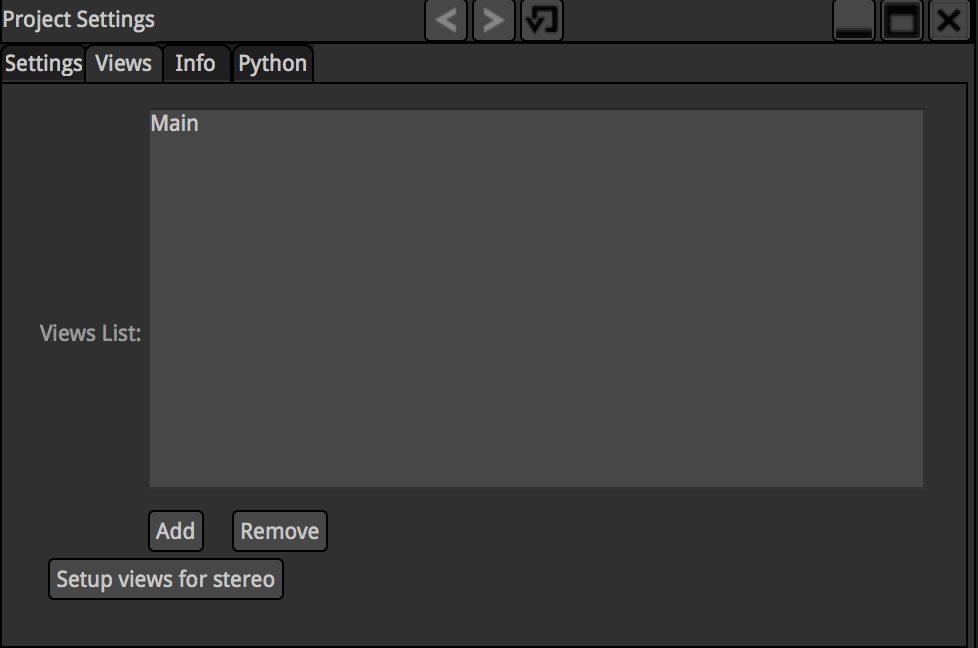{kind=link}
You can add, remove and rename views as desired. Clicking the “Setup views for stereo” button will make exactly 2 views named “Left” and “Right”.
Upon importing an EXR file containing multiple views within the file, Natron will prompt you to create the appropriate views in the project:
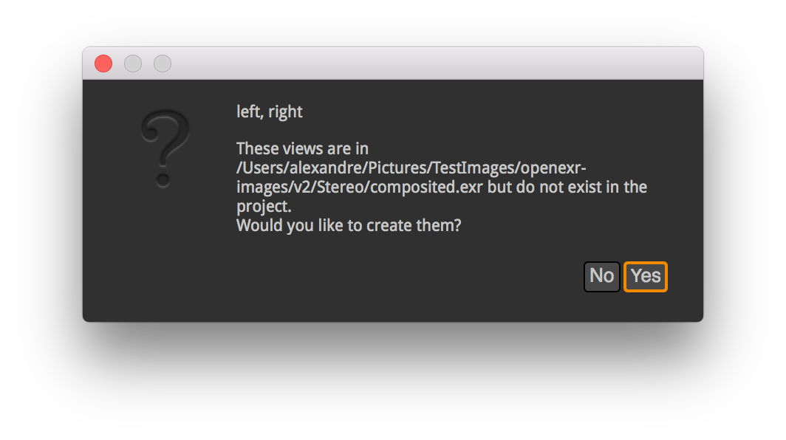{kind=link}
If clicking yes, Natron will create the missing views in the project:
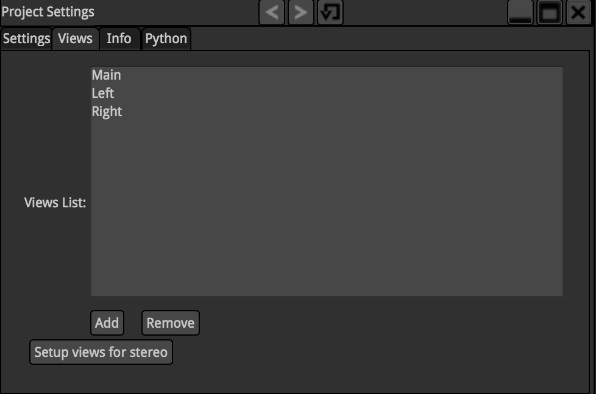{kind=link}
You can remove the “Main” view if needed (in our case it does not make sense to leave it in the project). You can do so by clicking either Remove and selecting the “Main” view or clicking “Setup views for stereo”:
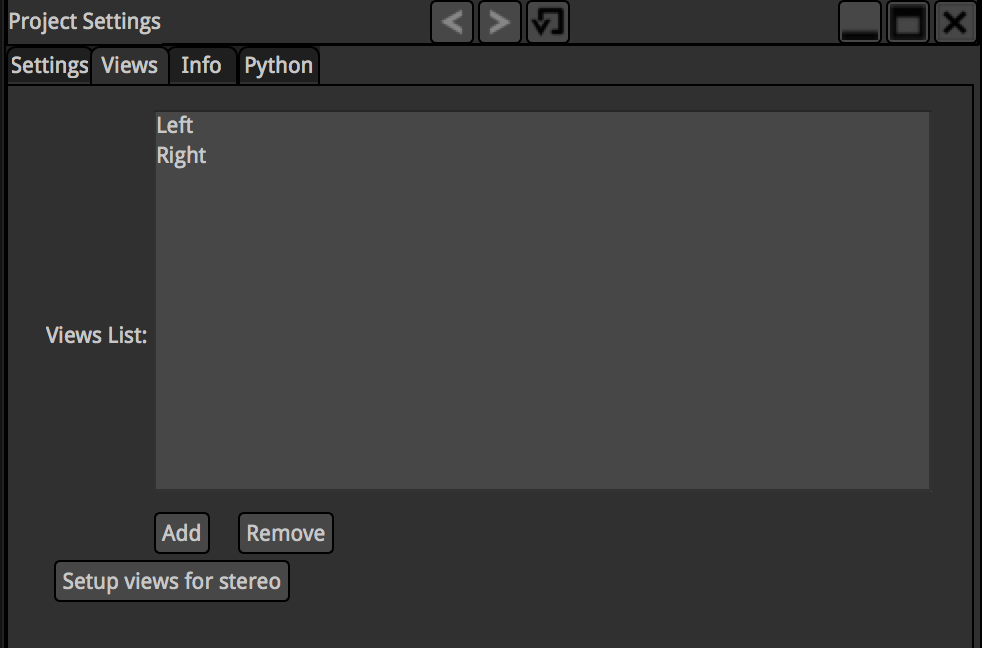{kind=link}
The Read node will have a special “V” mark on its top-left corner, indicating that it has multiple views available. When hovering the “V” indicator with the mouse, more information is available regarding which views are present in this Read node
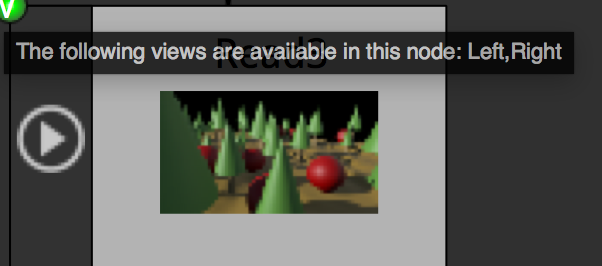{kind=link}
Hovering your mouse over the Output Layer parameter will detail which layer is available in which view:
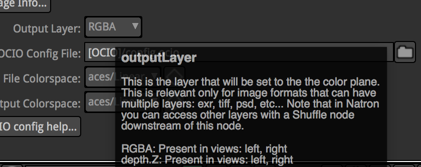{kind=link}
When the project has multiple views available, each viewer will have a drop-down with available views. You can select with view to display:
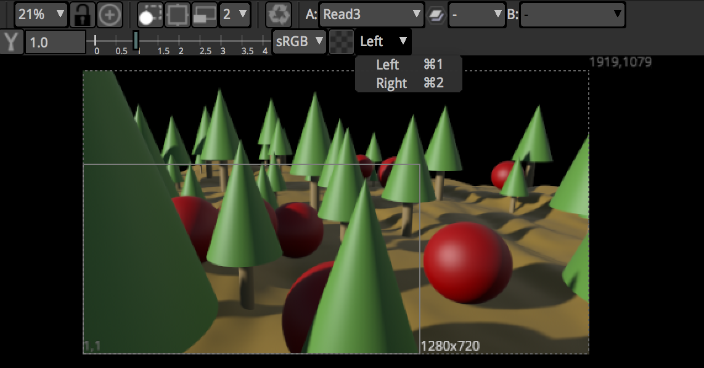{kind=link}
If we take a look at our Read node’s properties, you can see that we have 2 layers in this file: RGBA and depth. Layers may sometimes not be present in all views in the file, but the Read node will show the union of all layers available across all views:
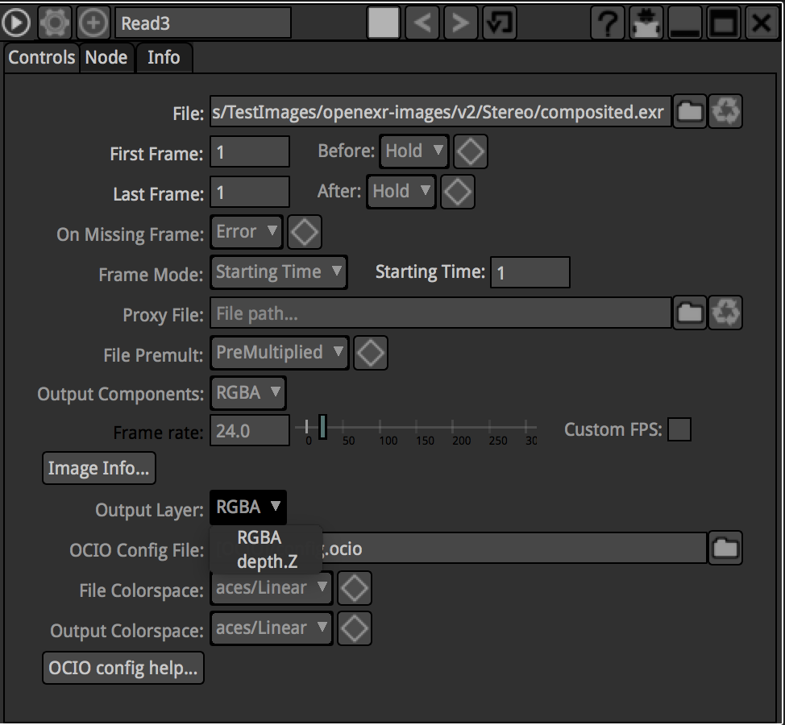{kind=link}
Joining separate views¶
In Natron you can join different simple-view files to a multiple-view stream by using the JoinViews node, like this:
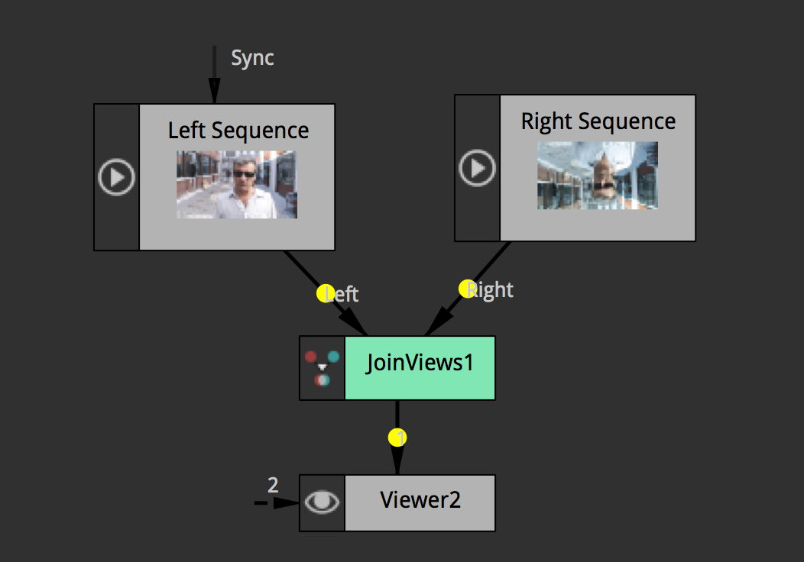{kind=link}
Exporting stereoscopic sequences¶
Exporting multi-view files in Natron can be done multiple ways: Either you want to have a separate file for each view, or you want all views to be in the same file. The later is only supported by the EXR file format. When exporting to EXR, the Write node properties panel will have an extra “Views” parameter:
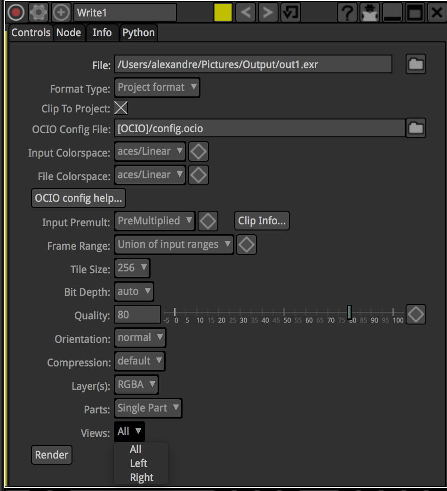{kind=link}
This is quite straight-forward: you can select which views you decide to export.
You can also select which layer you would like to export:
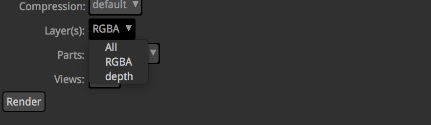{kind=link}
The “All” choice is only available for the EXR and TIFF file formats which allow embedding more than 1 layer per-file.
Another interesting parameter controls how the EXR/TIFF file is written, this is the “Parts” parameter:
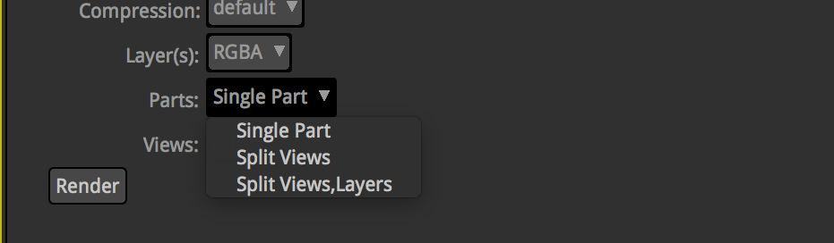{kind=link}
When set to “Single Part”, the Write node will aggregate all views requested to render in a single “part” of the file. Single part files are what is written by OpenEXR 1.x applications, thus selecting “Single Part” ensures compatibility with other applications that do not support OpenEXR 2.
When set to “Split Views”, all views will be scattered in different parts of the file. The resulting file will only be readable in applications that support OpenEXR 2 but with the advantage of being faster to read than the single-part files. Note that if you select “All” layers to render all layers will be aggregated for each view.
When set to “Split Views,Layers” each layer of each view will be written to a separate part, ensuring EXR optimized for decoding speed, though the file will be larger.
Writing to separate files¶
You can choose to export views to a separate files by adding a %v (which will expand to the letter ‘l’ or ‘r’) or %V (which will expand to the word “left” or “right”) to the output filename:
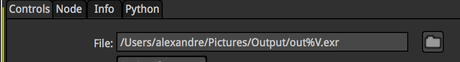{kind=link}
In that case the “Views” parameter will no longer be available. This is how you should proceed if you want to output multiple views but do not want to write EXR’s.
By default for files that do not support multi-view (I.e: anything besides EXR), if requesting to write multiple views to the same file, Natron will only write the first view in the project’s views. If you do not want to render all views but a specific one, you can use a “OneView” node prior to your Write node to specify which view you would like to write-out:
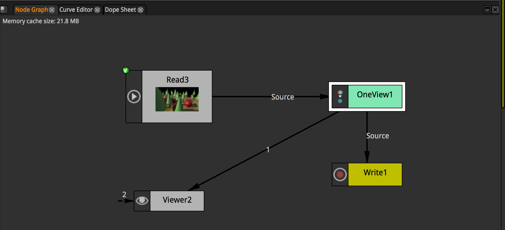{kind=link}